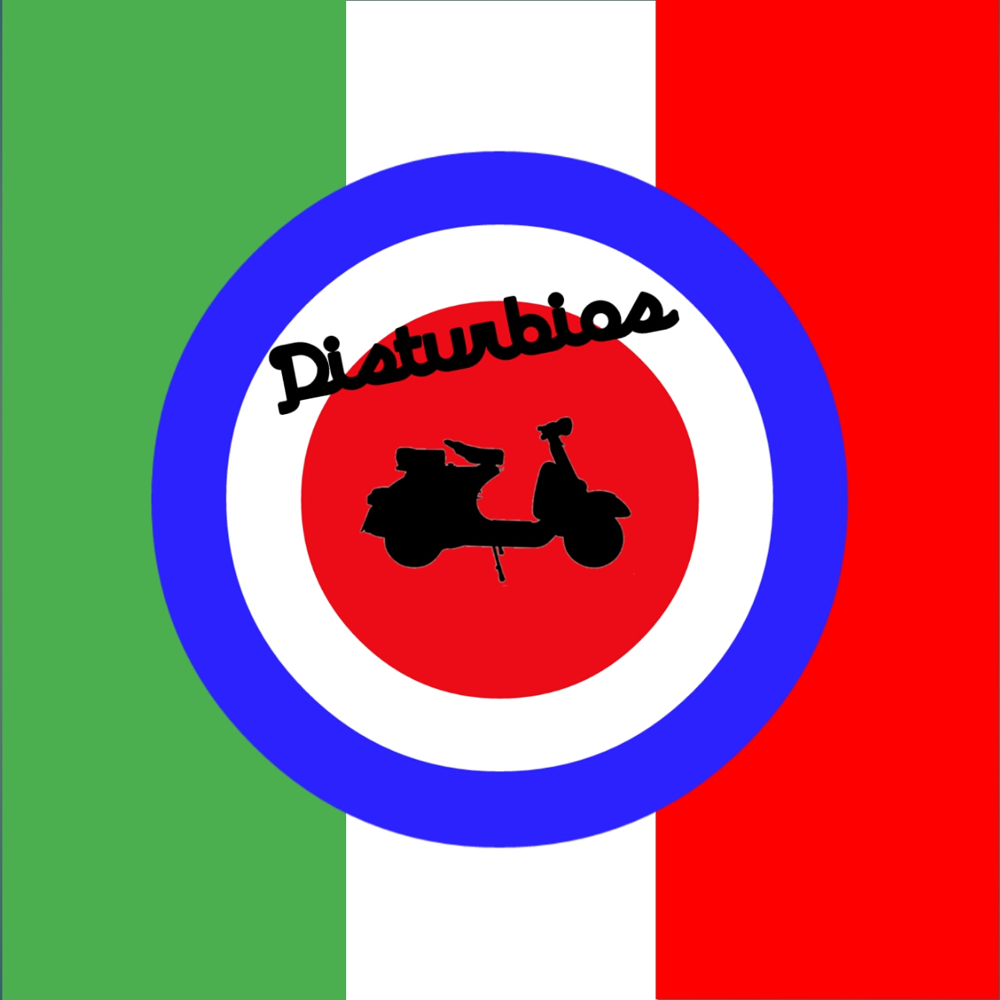
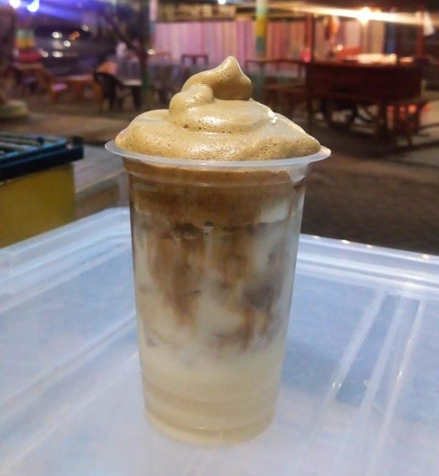
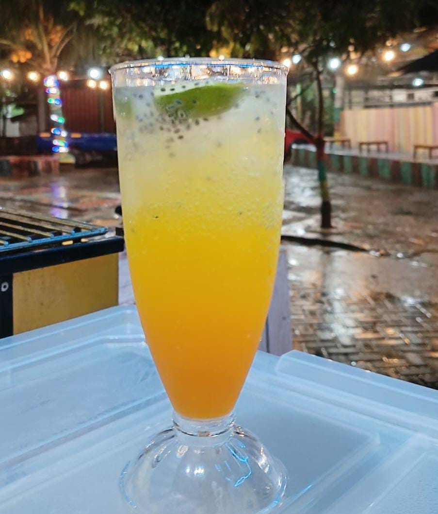

Senandung Kopi
Selamat datang di [Nama Website Anda], tempat di mana cerita dan seni kopi berpadu. Kami adalah tim pecinta kopi yang berkomitmen untuk berbagi pengetahuan, pengalaman, dan keindahan dunia kopi kepada Anda.
Misi Kami
- Mengedukasi pecinta kopi tentang proses dari biji hingga cangkir.
- Membantu Anda menemukan rahasia rasa kopi terbaik.
- Menyediakan sumber terpercaya tentang teknik menyeduh, memilih biji kopi, dan memahami budaya kopi.
Perjalanan Kami
Bermula dari kecintaan terhadap kopi, kami memulai perjalanan ini untuk menyelami lebih dalam seni di balik minuman favorit dunia. Dari belajar langsung dengan petani kopi lokal hingga mencoba berbagai metode penyeduhan, kami menghadirkan pengalaman kopi terbaik untuk Anda.
Coffee Education
Mengenal Jenis Biji Kopi
- Arabika: Rasa lembut, sedikit asam, dan kompleks.
- Robusta: Rasa kuat, pahit, dan tinggi kafein.
- Liberika: Aroma fruity atau woody yang khas.
Proses dari Biji ke Cangkir
- Panen: Memilih biji matang secara manual.
- Pengolahan: Washed atau Natural Process.
- Sangrai: Dari rasa asam hingga karamel.
- Penyeduhan: Teknik seperti V60 atau Espresso.
Teknik Dasar Menyeduh Kopi
Pelajari rasio kopi dan air, suhu ideal, dan metode penyeduhan favorit Anda.
Gallery


